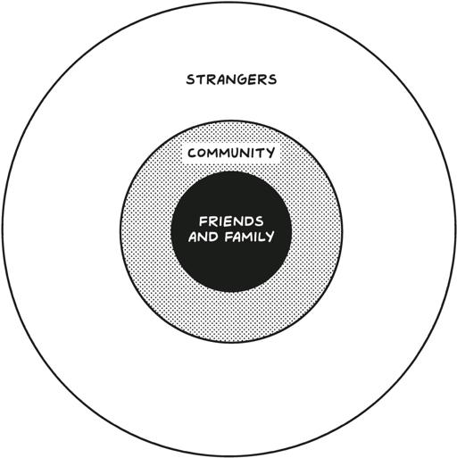

After building a product, many people think the next step is launching it to the world. Hollywood has premiere parties, while Silicon Valley has Demo Days, Product Hunt launches, and “Show HN” posts.
在打造产品之后，许多人认为下一步就是将其推向世界。好莱坞有首映派对，而硅谷有演示日、Product Hunt 上市和“Show HN”帖子。
This obsession with launching is not exclusive to Hollywood and Silicon Valley. It pervades the thinking of cities and towns throughout the world. There’s probably a restaurant near you with a giant red sign pinned over its entrance reading GRAND OPENING.
这种对发布的痴迷不仅限于好莱坞和硅谷。它渗透到世界各地城市和城镇的思维中。你附近可能有一家餐馆，入口上方挂着一个巨大的红色标志，上面写着“盛大开业”。
It invites you in, with a promise that you’ll be one of the first. Maybe you’ll get a deal. But tomorrow, and even a month from now, the sign is still there. They’re always opening, and grandly too!
它邀请你进去，承诺你将成为第一批顾客之一。也许你会得到优惠。但明天，甚至一个月后，标志仍然在那里。他们总是在开业，而且是盛大开业！
Lots of businesses go this route. Jeffrey Katzenberg, cofounder and former CEO of Dreamworks, and Meg Whitman, former CEO of eBay, founded streaming video service Quibi, a cautionary tale of launching before actually going to market. The company raised $1.8 billion and bought Super Bowl ads, expecting the whole world to flock to their service. It planned a launch party, meant to draw 150 celebrities among its 1,500 guests, that was canceled due to the COVID-19 pandemic.
许多企业都走这条路。梦工厂联合创始人兼前首席执行官杰弗里·卡森伯格和 eBay 前首席执行官梅格·惠特曼创立了流媒体视频服务 Quibi，这是一个在真正进入市场之前就发布的警示故事。公司筹集了 18 亿美元，并购买了超级碗广告，期望全世界都涌向他们的服务。计划中的发布派对原本预计吸引 150 位名人在内的 1500 位嘉宾，但因 COVID-19 疫情而取消。
Ultimately, the app bombed. Only 300,000 people downloaded Quibi on day one, compared with Disney+’s 4 million. One month post-launch, Quibi had fallen off the Top 100 chart, and within six months it shut down and returned its investors’ money.
最终，这款应用失败了。第一天只有 30 万人下载了 Quibi，而 Disney+则有 400 万。发布一个月后，Quibi 就从前 100 名榜单中消失了，六个月内它关闭了并退还了投资者的钱。
This experience isn’t so different for software businesses. Two excitable cofounders work on an app, submit it to Product Hunt, and see thousands of sign-ups on the first day. A few months later, no one is using it, and they’re on to a new project. Rinse and repeat. But businesses are not something you engage with once, talk to your friends about, and then forget as you move on to the next thing. Your business should have customers for life, not just for a Friday night.
对于软件企业来说，这种经历并没有太大不同。两位兴奋的联合创始人开发了一款应用，将其提交到 Product Hunt，第一天就有数千人注册。几个月后，没有人再使用它，他们又开始了一个新项目。如此反复。但企业不是你只接触一次、和朋友聊聊然后就忘记的东西。你的企业应该拥有终身客户，而不仅仅是一个周五晚上。
That’s because the real story of starting and then growing a business isn’t really that thrilling most days. Between start and success, it can be a slog. It can take years. And it often isn’t nearly as glamorous as you expect. But you will have many small victories, and over time they will build into a sense of satisfaction and pride that comes from not giving up.
这是因为创业并发展业务的真实故事在大多数日子里并不那么激动人心。从开始到成功，这可能是一段艰难的旅程。可能需要数年时间。而且通常没有你预期的那么光鲜亮丽。但你会有许多小胜利，随着时间的推移，它们会积累成一种来自不放弃的满足感和自豪感。
In the last chapter we focused on process and product, but once you have your MVP, it’s time to turn your attention to your first customers. If you wait too long, if you endlessly iterate without showing your work to the world, you may feel productive even though you are slowly (or quickly) running out of runway.
在上一章中，我们专注于流程和产品，但一旦你有了你的 MVP，就该把注意力转向你的第一个客户。如果你拖得太久，如果你无休止地迭代而不向世界展示你的工作，你可能会觉得自己很有成效，即使你正在慢慢（或迅速）耗尽跑道。
That’s why it’s so important to start. Once you have enough repeat customers, you have product-market fit, which is a milestone worth celebrating and a sign you can think about launching. Until then, skip the one-time grand opening, and instead focus on the slow and steady journey of selling to your first hundred customers.
这就是为什么开始如此重要。一旦你有足够的回头客，你就达到了产品市场契合，这是一个值得庆祝的里程碑，也是你可以考虑发布的标志。在此之前，跳过一次性盛大的开幕式，而是专注于缓慢而稳定地向你的前一百位客户销售的旅程。
Sales Is Not a Four-Letter Word
销售不是一个四字词
I interviewed a lot of people for this book, and you wouldn’t believe how hard it was to get anyone to talk about sales. No one likes the stereotype idea of selling—it’s sleazy, and it depends on information asymmetry—but that is not what we are doing here. You already have a relationship with the community, and you’re selling a product that adds value to the life of a customer who is happy to pay for it.
我为这本书采访了很多人，你不会相信要让任何人谈论销售有多难。没有人喜欢销售的刻板印象——它是卑鄙的，依赖于信息不对称——但这不是我们在这里所做的。你已经与社区建立了关系，并且你正在销售一种能为愿意付费的客户生活增值的产品。
Eventually strangers will buy your product, but mostly because your customers are spreading the gospel of your business and product, not because they saw an ad. But it will take time to get there. It’s not something you hit on day one.
最终，陌生人会购买你的产品，但主要是因为你的客户在传播你的业务和产品的福音，而不是因为他们看到了广告。但这需要时间才能实现。这不是你第一天就能做到的事情。
Look at your own life: When was the last time you went on Twitter or Facebook and shouted from your digital balcony about a product you loved? It just doesn’t happen that often.
看看你自己的生活：你上一次在 Twitter 或 Facebook 上从你的数字阳台上大声赞美你喜欢的产品是什么时候？这种情况并不常发生。
“Viral success” is a myth, pure and simple. There is no such thing. It’s just something journalists say about a person, company, product, or service whose seemingly rapid rise is inexplicable from the outside. Most of us—and that includes journalists—only notice new things when they’ve reached escape velocity. We’re often unaware of the previous months or years of hard work and stumbles.
“病毒式成功”是一个纯粹的神话。根本没有这样的事情。这只是记者用来形容一个人、公司、产品或服务的术语，其看似迅速的崛起从外界看来无法解释。我们大多数人——包括记者在内——只有在新事物达到逃逸速度时才会注意到。我们往往不知道之前几个月或几年的艰苦工作和挫折。
At the end of this chapter, you will launch, but it’s because you’ll be celebrating milestones that will actually mean something about the longevity and sustainability of your business. You will be profitable, you will have customers paying for your product, and they will be telling other customers about it. Then you can launch—or rather, you can celebrate by saying thank you to the community and the customers who have helped you build from nothing to something.
在本章结束时，你将会启动，但这是因为你将庆祝那些真正意味着你的业务长久性和可持续性的里程碑。你将盈利，你将有客户为你的产品付费，他们也会向其他客户推荐你的产品。然后你可以启动——或者更确切地说，你可以通过向帮助你从无到有的社区和客户表示感谢来庆祝。
Until then, treat the sales process as an opportunity for discovery. You think your product is market-ready. It’s probably not. You think you’ve figured out the correct pricing tiers. You probably haven’t.
在此之前，将销售过程视为一个发现的机会。你认为你的产品已经准备好进入市场。可能还没有。你认为你已经找到了正确的定价层级。可能还没有。
Turn every failed conversion into an insight. Either you’re talking to the wrong person and you need to shift your focus, or they’re the right person but your product still has work to do to solve their problem. Both are good learnings, learnings you want to have before you start marketing to a broader audience.
将每一次失败的转化变成洞察。要么是你在和错误的人交谈，需要转移你的注意力，要么是他们是正确的人，但你的产品仍需努力解决他们的问题。这两者都是很好的学习经验，是你在开始向更广泛的受众进行营销之前想要获得的。
For now, sales is an education process. Your customers will get to know you, and you’ll get to know what’s working, what’s not, and how to fix it. Selling might not always go smoothly at the beginning, but I guarantee waiting won’t make it any easier. Once you’ve figured out how to get started, the next challenge is pricing.
目前，销售是一个教育过程。你的客户会了解你，你也会了解什么有效，什么无效，以及如何解决问题。销售一开始可能不会一帆风顺，但我保证等待不会让事情变得更容易。一旦你弄清楚如何开始，接下来的挑战就是定价。
Charge Something, Anything
收费，无论多少
Pricing is hard. In the early days, you may be tempted to give your product away for free or to charge less than the value of your time or the raw materials you used. Don’t. In order to stay alive, you need to make money. The only way to do that is not only to charge something, but to charge something that allows you to stay afloat. If you’ve productized, then you’ve already figured out an initial pricing structure for your first customers, and pricing, just like every other part of a business, is subject to iteration. Eventually, the type of customer you have will influence how and how much you charge, but at the beginning, as you build your solution, keep in mind that you’re able to charge in two ways:
定价很难。在早期阶段，你可能会倾向于免费提供你的产品，或者收取低于你时间价值或原材料成本的费用。不要这样。为了生存，你需要赚钱。做到这一点的唯一方法不仅是收费，而且是收取能够让你维持生计的费用。如果你已经产品化，那么你已经为你的首批客户制定了初步的定价结构，并且定价和业务的其他部分一样，是可以迭代的。最终，你拥有的客户类型会影响你如何以及收取多少费用，但在开始时，当你构建解决方案时，请记住你可以通过两种方式收费：
Cost-based (things that have inherent costs—for example, web servers or an employee’s time). If you need to pay a certain amount, you can add a “margin,” say 20 percent, and charge that. For example, retail stores often buy wholesale and double the price when they sell it to consumers (giving them a margin of 50 percent). Marketplaces such as iTunes or iStockPhoto often go with this method.
基于成本（具有固有成本的事物，例如，网络服务器或员工的时间）。如果您需要支付一定的金额，您可以加上一个“利润”，比如 20%，然后收取这个费用。例如，零售店通常以批发价购买商品，并在卖给消费者时将价格翻倍（给他们 50%的利润）。像 iTunes 或 iStockPhoto 这样的市场通常采用这种方法。
Value-based (a feature with clear value). This is charging for something not because it costs you money to deliver, but because it has inherent value for the customer. For example, Netflix may have a multiscreen feature that doesn’t cost them any money to provide (beyond the engineering costs to ship the feature in the first place), but they are able to charge a monthly fee for it.
基于价值（具有明确价值的功能）。这不是因为提供某项服务需要花费金钱，而是因为它对客户具有内在价值。例如，Netflix 可能有一个多屏幕功能，提供这个功能并不需要他们花费任何金钱（除了最初推出该功能的工程成本），但他们可以为此收取月费。
The goal is to eventually charge people for tiered levels of service, which you can do when your product, service, or software has an established value and brand. Think of the tiers as you would think of the different types of plane tickets—you’ll get to your destination whether you sit in economy, business class, or first class, but with substantially different levels of service. Tiered pricing is a common practice for most software businesses, and it changes all the time depending on the features offered. For example, Circle.so, a community platform for creators, has three levels of service, basic, professional, and enterprise, based both on the number of members in the community and on available features and integrations.
目标是最终向人们收取分级服务的费用，当您的产品、服务或软件具有既定的价值和品牌时，您可以这样做。可以将这些等级视为不同类型的机票——无论您坐在经济舱、商务舱还是头等舱，您都会到达目的地，但服务水平有显著差异。分级定价是大多数软件企业的常见做法，并且会根据提供的功能不断变化。例如，Circle.so，一个为创作者提供的社区平台，基于社区成员数量以及可用功能和集成，提供三个服务等级：基础、专业和企业。
Even if you start low and go up over time, it is important to charge something. There is a very large difference between free and one dollar—that’s the zero price effect. As behavioral economist Dan Ariely writes in Predictably Irrational, “people will jump for something free even when it’s something they don’t want.” He uses the example of a long line of college students waiting for free, terribly unhealthy brownies. Asked to pay even just one cent, the line of kids disappears.
即使你从低价开始并随着时间的推移提高价格，收取一定费用仍然很重要。免费和一美元之间有很大的区别——这就是零价格效应。正如行为经济学家丹·艾瑞里在《怪诞行为学》中所写，“人们会为了免费的东西而跃跃欲试，即使那是他们不想要的东西。”他举了一个例子，一长队大学生在等待免费但极不健康的布朗尼蛋糕。即使只需支付一分钱，排队的学生也会消失。
(Later, you can consider introducing a free tier. This model, popularized by venture capitalist Fred Wilson, is often referred to as “freemium.”)
（之后，你可以考虑引入一个免费层。这种模式由风险投资家弗雷德·威尔逊推广，通常被称为“免费增值”。）
Advertising-driven media models are another example. When the reader doesn’t pay anything, it’s often hard to convince them that it’s valuable when the time comes to start charging for it.
以广告为驱动的媒体模式是另一个例子。当读者不需要支付任何费用时，往往很难在开始收费时让他们相信它的价值。
Pricing decisions are not permanent. A price is just a part of a product, like everything else, and it can and will change over time. Similar to product development, your goal is to start the discovery process, not get to the perfect result right away.
定价决策并不是永久的。价格只是产品的一部分，就像其他一切一样，它可以而且会随着时间而改变。与产品开发类似，你的目标是开始探索过程，而不是立即达到完美的结果。
It’s worth noting that when prices for products do change, they generally go up. This should be true for you as well: As your product improves and you are able to provide a better service, your offering will become more valuable to your customer as well—and you may even introduce higher tiers for your superusers.
值得注意的是，当产品价格发生变化时，它们通常会上涨。对你来说也是如此：随着你的产品改进并能够提供更好的服务，你的产品对客户的价值也会增加——你甚至可以为超级用户引入更高的等级。
Once you’ve picked a price, you need to shop it around. I recommend starting with those closest to you: your friends and family.
一旦你确定了价格，你需要到处推销。我建议从你身边的人开始：你的朋友和家人。
(Unfortunately, not everyone has a supportive family. Feel free to substitute a chosen family in its place.)
（不幸的是，并不是每个人都有一个支持的家庭。可以随意用选择的家庭代替。）
Friends and Family First
先从朋友和家人开始
In Silicon Valley, there’s a term for the first round of funding: the “friends and family” round. This may be even more common outside the Bay Area, where venture capitalists and angel investors do not patrol the streets looking for things to fund. But friends and family aren’t just important when it comes to funding. Whether or not they’ve given you a dime up until now, it’s worth pitching them to be your first customers.
在硅谷，第一轮融资有一个术语：“亲友”轮。在湾区以外，这种情况可能更为常见，因为风险投资家和天使投资者并不会在街上巡逻寻找投资对象。但亲友不仅在融资方面重要。无论他们是否曾给过你一分钱，都值得向他们推销，让他们成为你的第一批客户。
This may make you uncomfortable even if you know that friends and family are in the dead center of your community. It certainly made me uncomfortable, shoving my business in my friends’ faces and asking them to try Gumroad when I knew I didn’t have all the kinks worked out yet. But when you’re just getting started, with few credentials to your name, who trusts you more than your friends and family? And if they don’t, who will?
即使你知道亲友是你社交圈的核心，这也可能让你感到不安。把我的生意推到朋友面前，要求他们尝试 Gumroad，而我知道自己还没有解决所有问题，这确实让我感到不安。但当你刚刚起步，几乎没有什么资历时，谁比你的亲友更信任你？如果他们不信任你，那还有谁会呢？
Yet people believe they can skip their friends and family in favor of launching and going viral. For example, on Kickstarter. But even Kickstarter knows this isn’t the case. “Millions of people visit Kickstarter every week, but support always begins with people you know,” it reads on their website. “Friends, fans, and the communities you’re a part of will likely be some of your earliest supporters, not to mention your biggest resources for spreading the word about your project.”
然而，人们相信他们可以跳过朋友和家人，转而追求启动和病毒式传播。例如，在 Kickstarter 上。但即使是 Kickstarter 也知道情况并非如此。“每周有数百万人访问 Kickstarter，但支持总是从你认识的人开始，”他们的网站上写道。“朋友、粉丝和你所参与的社区可能会是你最早的支持者，更不用说是传播你项目信息的最大资源。”
Projects do go viral occasionally, I’m sure, but virtually none without a big initial push from the friends, family, and fans of the project’s creators. All of that is to say it’s normal and maybe even expected to rely on friends and family to provide initial support, and to be the first to buy your product. If you’re having trouble with that, remind yourself you’ve built something you think provides real value. It’s worth paying for even if it’s not perfect!
项目确实偶尔会病毒式传播，我相信，但几乎没有一个项目是在没有项目创作者的朋友、家人和粉丝的大力支持下实现的。所有这些都意味着依靠朋友和家人提供初步支持是正常的，甚至可能是预期的，并且他们会是第一个购买你产品的人。如果你对此感到困难，提醒自己你已经构建了一些你认为具有真正价值的东西。即使它不完美，也值得付费！
PleaseNotes founder and CEO Cheryl Sutherland was using journaling and affirmations to uncover her next professional step when she came up with the idea for her company, which offers coaching programs and makes journals and other products geared toward personal development. A close friend who was a graphic designer helped design her website and her first product, the PleaseNotes, a set of three sticky notepads printed with affirmations. Two other friends who had a crowdfunding consulting business advised her on how to launch an effective Kickstarter campaign to generate preorders for her second product, a PleaseNotes journal. Her goal was to raise $10,000. She eventually raised $15,054 from 253 people, many of whom were friends and family. That money allowed her to test the market and gave her the momentum she needed to keep going.
PleaseNotes 的创始人兼首席执行官 Cheryl Sutherland 在通过写日记和肯定语来寻找她的下一个职业步骤时，想出了她公司的创意。该公司提供辅导计划，并制作面向个人发展的日记本和其他产品。一位是平面设计师的密友帮助设计了她的网站和她的第一个产品 PleaseNotes，这是一套印有肯定语的三张便签本。另两位拥有众筹咨询业务的朋友建议她如何发起有效的 Kickstarter 活动，为她的第二个产品 PleaseNotes 日记本生成预购。她的目标是筹集 10,000 美元。她最终从 253 人那里筹集了 15,054 美元，其中许多人是朋友和家人。这笔钱让她能够测试市场，并为她提供了继续前进的动力。
That early proof of concept is invaluable. It takes time for a restaurant to figure out their menu, hence soft openings with friends and family. It takes time for a movie to figure out its pacing, hence test screenings. The same goes for your business and your product.
早期的概念验证是无价的。餐厅需要时间来确定他们的菜单，因此会有与朋友和家人的试营业。电影需要时间来确定节奏，因此会有试映。您的业务和产品也是如此。
Once you’ve addressed feedback and turned your friends and family into customers because your product is genuinely good, you can move on from your friends and family, and into your communities.
一旦你解决了反馈问题，并因为产品确实优秀而将朋友和家人转变为客户，你就可以从朋友和家人转向你的社区。
Community, Community, Community
社区，社区，社区
Over time, this becomes less about you and more about your product. Your friends and family, whom you started with, cared most about you. Your community cares less about you and more about your product.
随着时间的推移，这变得越来越少关于你，而更多关于你的产品。你最初开始的朋友和家人最关心的是你。你的社区则更关心你的产品，而不是你。

This is the same way your business grows: starting with the people who care about you the most, and “ending” with the people who care about you the least.
这与你的业务增长方式相同：从最关心你的人开始，“结束”于最不关心你的人。
Even if you’ve successfully solved a problem for your community, it may take some time and patience to get their attention. Humans, like objects, have inertia. Everyone is on a path, and it usually takes a bump to knock them in a different direction, even if it is a better one in the form of the solution you’re offering with your business.
即使你已经成功为你的社区解决了一个问题，可能仍需要一些时间和耐心才能引起他们的注意。人类就像物体一样，有惯性。每个人都有自己的轨迹，通常需要一个冲击才能将他们推向不同的方向，即使这个方向是你通过业务提供的更好的解决方案。
Beyond the other human beings you personally know or are connected to, you can seek out similar customers in the physical environment around you. Every neighborhood, street, and downtown is a community where people live together and hang out. In thriving communities, there are local businesses, event venues, and block parties. This is where life happens outside of the office and the home. Put a poster on the wall of your favorite coffee shop and on telephone poles.
除了你个人认识或与之有联系的其他人之外，你还可以在你周围的物理环境中寻找类似的客户。每个社区、街道和市中心都是一个人们共同生活和聚会的社区。在繁荣的社区中，有当地的企业、活动场所和街区派对。这是生活在办公室和家之外发生的地方。在你最喜欢的咖啡店的墙上和电话杆上贴一张海报。
In the next chapter we’ll talk about formal marketing, but long before you ever implement a more structured plan, you can still take advantage of opportunities for strategic outreach. Every community has reporters and micro-influencers, who cover the goings-on within the community. In Portland, where I live now, there are dozens of Instagram and Twitter accounts about every facet of the city. These are student, amateur, and professional journalists. They live to write about what you are up to.
在下一章中，我们将讨论正式的营销，但在你实施更结构化的计划之前，你仍然可以利用战略推广的机会。每个社区都有记者和微型影响者，他们报道社区内的动态。在我现在居住的波特兰，有几十个关于城市各个方面的 Instagram 和 Twitter 账户。这些是学生、业余和专业记者。他们乐于写关于你正在做的事情。
This is how you make that happen:
这是你实现这一目标的方法：
Make a list of everyone—yes, everyone—who has written or shared anything about a similar business. A business launch. A business closure. A new product launch. A date night at that business. We can call these people subject matter experts.
列出所有——是的，所有——曾经写过或分享过类似业务的人。业务启动。业务关闭。新产品发布。那家企业的约会之夜。我们可以称这些人为主题专家。
Contact them all personally. Offer to walk them through your product, or meet them at your store, or give them a free meal. With Gumroad, I did this literally hundreds of times. And thousands of creators later, if I see a creator I really like whom I think Gumroad could help, I still reach out.
亲自联系他们。提供带他们了解你的产品，或者在你的店里见面，或者给他们一顿免费餐。在 Gumroad，我这样做了数百次。数千名创作者之后，如果我看到一个我非常喜欢的创作者，我认为 Gumroad 可以帮助他们，我仍然会联系他们。
Ask for their personal, candid feedback. Do not ask for reviews, or a social media post, or for them to tell their friends. Your goal is to improve your product experience, and you should make it clear that you massively appreciate their support.
请求他们的个人、坦诚反馈。不要要求评论、社交媒体帖子或让他们告诉朋友。你的目标是改善产品体验，并且你应该明确表示你非常感谢他们的支持。
When you first bring your product to market, you may be part of one community, but that community will grow and change as your business grows and changes. It’s simply discovering additional points of overlap and need and letting a broader group know that you have come up with a new solution to their problem. And hopefully, your customers will develop into their own community over time.
当你首次将产品推向市场时，你可能属于一个社区，但随着业务的增长和变化，该社区也会随之成长和变化。这只是发现更多的重叠点和需求，并让更广泛的群体知道你已经为他们的问题找到了新的解决方案。希望随着时间的推移，你的客户会发展成他们自己的社区。
This is about building relationships. You will be doing business for a long time, and it is much easier to keep a customer than to find a new one. Never oversell. Be honest, open, and always kind. Show them how you most recently improved your product. Tell them a recent failing. Don’t sell them on your product, educate them on your journey and learnings.
这关乎于建立关系。你将长期从事业务，留住一个客户比寻找新客户要容易得多。永远不要过度推销。要诚实、开放，并始终友善。向他们展示你最近如何改进了产品。告诉他们最近的失败。不要向他们推销你的产品，而是教育他们了解你的旅程和学习。
Cold Emails, Calls, and Messages
冷邮件、电话和信息
Long before you get to the bottom of the list of people you already know or could know, you’re going to be sending a lot of emails, you’re going to be making a lot of calls, and you’re going to be knocking on a lot of doors. It’s your job to reach out to friends, family, and members of your community whom you may not have seen for a while. Your calls are a chance to tell them what you’re up to and ask them if they’re interested in becoming customers. Some will say yes, but many will say no. Once you’re okay with the nos, you’re ready to sell to strangers.
在你了解完你已经认识或可能认识的人的名单之前，你将会发送大量的电子邮件，拨打大量的电话，并敲开许多门。你的工作是联系那些你可能有一段时间没见过的朋友、家人和社区成员。你的电话是一个机会，可以告诉他们你在做什么，并询问他们是否有兴趣成为客户。有些人会说是，但很多人会说不。一旦你能接受这些“不”，你就准备好向陌生人推销了。
In the early days (read: years) of Gumroad, we scoured the web for people who could benefit from a product like Gumroad and then told them about it. Literally thousands of times. That’s the only way, really, when you’re young and no one cares or knows who you are, to get folks to use your product.
在 Gumroad 的早期阶段（读作：几年），我们在网上搜寻那些可能从 Gumroad 这样的产品中受益的人，然后告诉他们。字面意思是成千上万次。这实际上是唯一的方法，当你年轻且没有人关心或知道你是谁时，让人们使用你的产品。
Over time, you can get away with doing it less and less. But until you have a lot of customers or some other force that can supply ongoing momentum, there’s nothing better than knocking on doors. This is a tried-and-true technique used by political canvassers, the LDS Church, and others . . . because it works! Trust me, if there was a better way, people would have found it.
随着时间的推移，你可以逐渐减少这样做的频率。但在你拥有大量客户或其他能够提供持续动力的力量之前，没有什么比挨家挨户敲门更好的了。这是一种经过验证的技巧，政治宣传员、摩门教会和其他人都在使用……因为它有效！相信我，如果有更好的方法，人们早就找到了。
Even Katrina Lake, CEO of Stitchfix and one of Forbes’s Richest Self-Made Women in 2020, started out with cold calls and cold messages on LinkedIn to potential investors. “The more shameless you can be, the thicker skin you have, the better,” she says. “People are going to not write back and people are going to say no, but every now and then someone’s gonna be interested and say yes. And you wouldn’t have had that chance if you hadn’t gotten all the no’s first.” While you may not be hitting up investors, you will be talking to people over and over again who will say no. The sooner you get used to it, the sooner you stop taking it personally and use those nos as a learning opportunity, the better.
即使是 Stitchfix 的首席执行官、2020 年福布斯最富有的白手起家女性之一的卡特里娜·莱克，也是一开始通过冷拨电话和在 LinkedIn 上给潜在投资者发冷信息起步的。“你越是无所顾忌，皮肤越厚，就越好，”她说。“人们不会回复你，人们会说不，但偶尔会有人感兴趣并说是。如果你没有先得到所有的拒绝，你就不会有这样的机会。”虽然你可能不是在找投资者，但你会一遍又一遍地与那些会说不的人交谈。越早习惯这一点，越早不把它当回事，并将这些拒绝作为学习的机会，就越好。
I get it. It’s awkward and uncomfortable to reach out to people you don’t necessarily know personally, many of whom will ignore or reject you. My sense is that people who wish to reach customers some other way, like search engine optimization (SEO) or content marketing, are looking for an out. If that’s you: Stop! It doesn’t exist! Just hunker down and dedicate some time to finding people, reaching out to them personally via email, phone, whatever, and being okay with it sucking for a while. You may find that talking about your process and your product and the path you’ve taken to get there is far less difficult than you think. After all, this is your work, and if you’re bringing it out to the world, you should be excited and proud, so don’t skip this chance at discovery.
我明白。主动联系那些你不一定认识的人确实很尴尬和不舒服，其中很多人会忽视或拒绝你。我的感觉是，那些希望通过其他方式接触客户的人，比如搜索引擎优化（SEO）或内容营销，正在寻找一种逃避。如果你是这样的人：停下！那是不存在的！只需埋头苦干，花些时间去寻找人，通过电子邮件、电话等方式亲自联系他们，并接受一段时间的不如意。你可能会发现，谈论你的过程、你的产品以及你为此所走的道路，远没有你想象的那么困难。毕竟，这是你的工作，如果你要把它带给世界，你应该感到兴奋和自豪，所以不要错过这个发现的机会。
A stellar launch doesn’t change this. Fanfare doesn’t bring real customers, as Quibi learned. Consistent growth comes after a long period of time, mostly driven, especially at the beginning, by a hardworking sales team—starting with you.
一个出色的发布并不能改变这一点。喧嚣并不能带来真正的客户，正如 Quibi 所学到的。持续的增长是在很长一段时间后才出现的，尤其是在开始阶段，主要是由一个勤奋的销售团队推动的——从你开始。
If you need help getting started, here’s an example:
如果你需要帮助开始，这里有一个例子：
Hi John,
你好，约翰，
I saw you’re selling a PDF on your website using PayPal, and manually emailing everyone who buys the PDF. I built a service called Gumroad, which basically automates all of this. I’d love to show it to you, or you can check it out yourself: gumroad.com.
我看到你在网站上通过 PayPal 出售 PDF，并手动给每个购买 PDF 的人发送邮件。我创建了一个名为 Gumroad 的服务，基本上可以自动化这一切。我很乐意向你展示，或者你可以自己查看：gumroad.com。
Also happy to just share any learnings we see from creators in a little PDF we have. Let me know!
我也很乐意分享我们从创作者那里学到的一些经验，我们有一个小 PDF。请告诉我！
Best,
最好的祝福，
Sahil, founder and CEO of Gumroad
Sahil，Gumroad 的创始人兼 CEO
Don’t copy-paste. Each email will refine your ability to write better emails. Done right, you’re not only educating customers, but educating yourself about what you can do better. It’s a learn-learn situation.
不要复制粘贴。每封电子邮件都会提高你写更好邮件的能力。做得好，你不仅在教育客户，也在教育自己如何做得更好。这是一个双赢的局面。
Manual “sales” will be 99 percent of your growth in the early days, and word of mouth will be 99 percent of your growth in the latter days. It’s not a glamorous answer, but it’s true. Things like paid marketing, SEO, and content marketing can come later, once you have a hundred customers, once you’re profitable, and once your customers are referring more customers to you. Only then!
在早期阶段，手动“销售”将占你增长的 99%，而口碑将在后期占你增长的 99%。这不是一个光鲜的答案，但却是真实的。付费营销、SEO 和内容营销可以在你拥有一百个客户、盈利并且客户开始为你介绍更多客户之后再考虑。只有到那时！
The best news of all is that once you have a hundred customers, you can use the same playbook to get to a thousand. Once you have a thousand, you can use a similar playbook to get to ten thousand.
最好的消息是，一旦你拥有一百个客户，你可以用同样的策略扩展到一千个客户。一旦你拥有一千个客户，你可以用类似的策略扩展到一万个客户。
When Slack IPO’d in 2020 at a valuation of $16 billion, its offering documents showed that 575 of their customers accounted for approximately 40 percent of their revenue. This just goes to show that you need far fewer customers than you may think.
当 Slack 在 2020 年以 160 亿美元的估值上市时，其招股文件显示，他们的 575 个客户贡献了大约 40%的收入。这表明你需要的客户数量比你想象的要少得多。
Big network-focused tech companies boast dazzling metrics, but their actual profits (when they have profits, anyway) come from a very tiny portion of their total audience. The rest of us might do better to ignore the lurkers and freeloaders altogether and focus on core customers. Depending on the nature of the product or service, anywhere from a few dozen to a few thousand regular customers will be more than enough to keep a business viable long-term.
大型网络为中心的科技公司拥有令人眼花缭乱的指标，但它们的实际利润（如果有利润的话）却来自于其总受众中极小的一部分。我们其他人可能最好完全忽略潜伏者和免费用户，而专注于核心客户。根据产品或服务的性质，从几十到几千个常规客户就足以使企业在长期内保持可行。
Mailchimp is a good example of how focusing on smaller, reliable customers might make more sense than swinging for the fences. Ben Chestnut and Dan Kurzius first started a web design agency called the Rocket Science Group with a focus on big corporate clients, but at the same time they also built Mailchimp, an email marketing service for small businesses. For about seven years they ran both businesses, until they closed the web design agency in 2007 because they found that working for small businesses gave them the freedom to be more creative and adapt quickly to their customers’ needs.
Mailchimp 是一个很好的例子，说明专注于较小的、可靠的客户可能比追求大客户更有意义。Ben Chestnut 和 Dan Kurzius 最初创办了一家名为 Rocket Science Group 的网页设计公司，专注于大型企业客户，但同时他们也创建了 Mailchimp，一个为小企业提供的电子邮件营销服务。在大约七年的时间里，他们同时经营这两项业务，直到 2007 年关闭了网页设计公司，因为他们发现为小企业工作使他们能够更具创造性，并能快速适应客户的需求。
Chestnut and Kurzius have a universe of offerings, but Mailchimp’s service is free up to the first two thousand emails. Once customers want to send to a larger list or need extra services, their plans begin at $10 per month and go up from there (see the earlier conversation on tiered pricing!). Even though Mailchimp could broaden its reach to corporations or institutions, the company’s customer base is still small businesses, and they’ve not strayed from their mission to build out features for their core community.
Chestnut 和 Kurzius 提供了一个广泛的服务，但 Mailchimp 的服务在前两千封邮件内是免费的。一旦客户想要发送更大的列表或需要额外的服务，他们的计划从每月 10 美元起，并从那里开始增加（参见之前关于分级定价的讨论！）。尽管 Mailchimp 可以将其业务扩展到公司或机构，但该公司的客户群仍然是小型企业，他们始终专注于为其核心社区开发功能。
It may be surprising, but it is not a coincidence. Whether you’re just starting or you’ve been in business for years, your most important clients are your community. They trust you because you’ve helped them grow their own businesses. It’s not happenstance that they’re ready to support you when you have your own.
这可能令人惊讶，但这并非巧合。无论你是刚刚起步还是已经经营多年，你最重要的客户是你的社区。他们信任你，因为你帮助他们发展了自己的业务。当你有自己的业务时，他们准备支持你，这并非偶然。
This isn’t just about huge SaaS businesses either. It applies to smaller businesses too. Across the spectrum of minimalist entrepreneurs, I see a common pattern: manual sales, finding your community, talking about your journey, highlighting your customers, and getting authentic coverage. If you started with community, and you continue to pay attention and solve the persistent problems your community has, then those first customers can take you very far.
这不仅仅适用于大型 SaaS 企业，也适用于较小的企业。在极简主义企业家的整个范围内，我看到一个共同的模式：手动销售、找到你的社区、谈论你的旅程、突出你的客户，并获得真实的报道。如果你从社区开始，并继续关注和解决你的社区所面临的持续问题，那么这些最初的客户可以带你走得很远。
Growth-at-all-costs is all about selling to strangers so that you can scale, but profitability-at-all-costs means you don’t need to depend on strangers to keep your business afloat. Instead, you can rely on your existing customers from your communities and eventually from your audience. They’ll spread the word as they feel comfortable doing so, and that’s how you’ll grow. The math looks different for everybody, but the goal is the same: financial independence. When I did it for myself, I needed about $2,000 a month to maintain my lifestyle.
不惜一切代价的增长是为了向陌生人销售以便扩大规模，但不惜一切代价的盈利意味着你不需要依赖陌生人来维持你的业务。相反，你可以依靠来自你社区的现有客户，最终来自你的受众。他们会在感到舒适时传播信息，这就是你成长的方式。每个人的数学计算看起来都不同，但目标是相同的：财务独立。当我为自己做到这一点时，我每月大约需要 2000 美元来维持我的生活方式。
If your product costs $10 a month, like Gumroad’s, you need two hundred customers. That doesn’t seem so bad. There are about 260 business days a year, so you’d get there in less than a year if you acquired one customer every business day.
如果你的产品每月收费 10 美元，比如 Gumroad 的产品，你需要两百个客户。那看起来不算太糟。每年大约有 260 个工作日，所以如果你每天获得一个客户，你将在不到一年的时间内达到目标。
Daniel Vassallo tweeted recently:
Daniel Vassallo 最近发推文：
That doesn’t sound so hard, does it? You may already be selling a product for someone else for your day job. Sell your own!
听起来不那么难，是吗？你可能已经在为你的日常工作为别人销售产品。卖你自己的产品吧！
Sell Like Jaime Schmidt
像 Jaime Schmidt 一样销售
Jaime Schmidt never launched Schmidt’s Naturals, a natural deodorant brand she founded in 2010. Instead, she celebrated small milestones along the way before eventually selling her company for more than $100 million in 2017 to Unilever.
Jaime Schmidt 并没有直接创立她的天然除臭剂品牌 Schmidt’s Naturals，而是一路庆祝小的里程碑，最终在 2017 年将公司以超过 1 亿美元的价格出售给联合利华。
When Jaime was pregnant with her son, she started a deep dive into the world of natural personal care products after taking a class in DIY shampoo. While there were hundreds of recipes available for soaps and lotions, there were few, if any, recipes for deodorants even though many people were concerned about ingredients in traditional formulations. Jaime had tried all of the natural deodorants but had found that none of them worked for her, so she decided to make one herself. She experimented for months until she found an effective formulation and landed on a scent, cedarwood, that she loved. Six months after the shampoo class, she had a product line of lotions and deodorant, and she was ready to sell to her first customers.
当 Jaime 怀着她的儿子时，她在上了一堂自制洗发水的课程后，开始深入研究天然个人护理产品的世界。虽然有数百种肥皂和乳液的配方，但几乎没有除臭剂的配方，尽管许多人对传统配方中的成分感到担忧。Jaime 尝试了所有的天然除臭剂，但发现没有一种对她有效，所以她决定自己制作。她实验了几个月，直到找到了一种有效的配方，并选择了她喜欢的香味——雪松木。洗发水课程结束六个月后，她拥有了一条乳液和除臭剂的产品线，并准备好向她的第一批客户销售。
She set up a simple website and a Facebook page for her business where she posted articles and recipes. In the first few months, she sold her products on consignment at two small local goods stores in Portland and on her own at a few street fairs and farmer’s markets around the city. People stopped at her booth to try the deodorant and lotions, and she found a rhythm to her conversations with prospective customers: asking them about the products they used; talking about her products and how she had tested them; and convincing people that her natural deodorant actually worked.
她为她的生意建立了一个简单的网站和一个 Facebook 页面，在那里她发布文章和食谱。在最初的几个月里，她在波特兰的两家小型本地商品店寄售她的产品，并在城市周围的一些街头集市和农贸市场上自己销售。人们停在她的摊位前试用除臭剂和乳液，她找到了与潜在客户交谈的节奏：询问他们使用的产品；谈论她的产品以及她如何测试它们；并说服人们她的天然除臭剂确实有效。
The following year, she decided to go all-in on her idea. She took two part-time positions with stores that sold Schmidt’s, a decision that served a dual purpose. First, interacting with the clientele gave her a chance to gather customer insights about her own products and learn about the inner workings of retail. But just as important, the income from those gigs served as the seed money to get Schmidt’s off the ground. The in-store customers as well as the people she continued to meet at festivals and fairs were most enthusiastic about the deodorant she made; many times, they returned to tell her how well it worked and to buy more. She says, “Early customer feedback allowed me to perfect my formula, determine future scents, and recognize where I was making the most impact.” And once she had refined her deodorant, “customers gave me validation that my product worked astonishingly well, and they spread the word.”
第二年，她决定全力投入她的想法。她在销售 Schmidt’s 的商店里找了两份兼职，这个决定有双重目的。首先，与顾客互动让她有机会收集关于自己产品的客户见解，并了解零售的内部运作。同样重要的是，这些工作的收入成为了启动 Schmidt’s 的种子资金。店内的顾客以及她在节日和集市上遇到的人们对她制作的除臭剂最为热情；很多时候，他们会回来告诉她效果很好并购买更多。她说：“早期的客户反馈让我完善了配方，确定了未来的香型，并认识到我在哪些方面产生了最大的影响。”一旦她改进了除臭剂，“顾客们就验证了我的产品效果惊人，并且口口相传。”
Schmidt started 2012 with new, modern packaging for the deodorant, which was designed to set it apart from the competition. She looked beyond the direct-to-consumer sales channels and the natural and wellness retailers that her competitors used almost exclusively; in 2015, she expanded into traditional grocery stores and pharmacies, which allowed her to reach more customers and to enable greater access to healthy natural products.
施密特在 2012 年开始为止汗剂推出了新的现代包装，旨在使其在竞争中脱颖而出。她不仅仅局限于直接面向消费者的销售渠道和她的竞争对手几乎专用的自然和健康零售商；在 2015 年，她扩展到传统的杂货店和药店，这使她能够接触到更多的顾客，并提供更广泛的健康自然产品。
Her creativity, innovation, and hard work paid off. Schmidt earned appearances on Fox News and The Today Show; mentions on social media from celebrities and influencers; articles in national publications; and distribution on the shelves of Target and Walmart. Though it was bittersweet, Jaime realized that a larger company with more resources could bring her vision and mission to an even wider customer base, and she signed the deal with Unilever right before Christmas 2017.
她的创造力、创新和努力工作得到了回报。施密特在福克斯新闻和《今日秀》上亮相；在社交媒体上获得名人和影响者的提及；在全国性刊物中发表文章；并在 Target 和沃尔玛的货架上进行分销。虽然有些苦乐参半，杰米意识到一个拥有更多资源的大公司可以将她的愿景和使命带给更广泛的客户群，于是在 2017 年圣诞节前夕与联合利华签署了协议。
Reflecting on her journey, she says, “When I’m asked about what made Schmidt’s so successful, I often say that my customers were my business plan. It started when I listened to those at the farmer’s market, and it continued through each step of growth. Staying hyper-tuned-in to my customers always guided and served me.” Not sales. Not marketing. Customers, educating, and being educated.
回顾她的旅程，她说：“当有人问我是什么让施密特如此成功时，我常说我的客户就是我的商业计划。这始于我倾听农贸市场的顾客，并在每一步成长中继续保持。始终密切关注我的客户总是引导和服务于我。”不是销售。不是营销。是客户，教育和被教育。
Launch to Celebrate
启动以庆祝
A launch is a stepping-stone. A thing that happens when your business already has customers, is doing well, and is going to last. Many companies go out of business within the first year. Why make a big deal out of a business before you’re sure it’ll stick around? Instead, build a successful business and “launch” as a celebration of your success. Spend your business’s profits on it, not your own money.
启动是一个垫脚石。它发生在您的业务已经有客户、运作良好并将持续下去的时候。许多公司在第一年内倒闭。为什么在您不确定业务能否持续之前就大肆宣传呢？相反，建立一个成功的业务，并将“启动”作为您成功的庆祝。用您的业务利润来庆祝，而不是用您自己的钱。
Better yet, celebrate your customers’ success. I think celebrating a milestone is a great excuse to launch. What about having successfully sold to a hundred customers? Once you’re running a growing, profitable business with a hundred customers who love you and whom you care about, you can celebrate them—by launching. Throw a party. Invite all of your customers and thank them for their ongoing support.
更好的是，庆祝客户的成功。我认为庆祝一个里程碑是一个很好的借口来启动。比如成功地销售给了一百个客户？一旦你经营着一个不断增长的、有利可图的业务，并且拥有一百个爱你且你关心的客户，你可以通过启动来庆祝他们。举办一个派对。邀请你所有的客户，感谢他们的持续支持。
Do that, and you’ll have customers lining up at your door. They’ll be people you already know, and who know you. Some of them will bring their own friends and families and maybe even members of their own communities too. They may even help promote your event before it happens because you’ve told them about it and they’re excited about supporting you. Plus, they can actually speak to others about how great your product is and how much better it has made their life. Your customers may be even better salespeople than you are. Good—there’s more of them than there are of you!
这样做，你会有客户排队等在你的门口。他们会是你已经认识的人，也认识你的人。其中一些人会带上他们自己的朋友和家人，甚至可能是他们自己社区的成员。他们可能会在活动发生之前帮助宣传，因为你已经告诉了他们，他们也很兴奋能支持你。此外，他们可以向其他人讲述你的产品有多好，以及它如何改善了他们的生活。你的客户可能比你更擅长销售。很好——他们比你多！
Or perhaps you decide you don’t need to launch at all. That’s fine too. But entrepreneurship can be lonely, and it can be a good excuse to rally—and reward—your community for helping you get this far.
或者你可能决定根本不需要启动。那也很好。但创业可能是孤独的，这可以是一个很好的借口来召集和奖励你的社区，感谢他们帮助你走到这一步。
Once you have a hundred customers, some of them now repeat customers, selling your product better than you can, you’re ready to move on to the next chapter of your business: marketing.
一旦你拥有了一百个客户，其中一些现在是回头客，比你更好地销售你的产品，你就准备好进入业务的下一个章节：营销。
KEY TAKEAWAYS
关键要点
Launches are alluring, but they are one-off events I wouldn’t bet your business on. Instead, wait until you have a product with repeat, paying customers. Then launch by thanking them!
产品发布很吸引人，但它们是一次性事件，我不会把你的业务押在上面。相反，等到你有了一个有重复付费客户的产品。然后通过感谢他们来启动！
Selling your product (or process) directly to customers may seem slow, but it is worthwhile. It will lead to a much better product because the sales process will be less about convincing and more about discovery.
直接向客户销售你的产品（或流程）可能看起来很慢，但这是值得的。这将导致一个更好的产品，因为销售过程将更少关于说服，而更多关于发现。
Start by selling to your family and friends before moving on to your communities and, finally, if at all, to total strangers. (The further away from you, the harder they will be to convince.)
在向完全陌生人推销之前，先从你的家人和朋友开始，然后是你的社区。（离你越远的人，越难说服。）
Learn More
了解更多
Read Predictably Irrational, a book on human psychology and pricing, by Dan Ariely.
阅读《怪诞行为学》，这是丹·艾瑞里关于人类心理学和定价的书。
Read How to Win Friends and Influence People, by Dale Carnegie, the best book I’ve ever read on “sales.”
阅读《人性的弱点》，这是戴尔·卡耐基所著的书，是我读过的关于“销售”的最佳书籍。
Read about how important cold email–based sales were in Gumroad’s early growth in this interview I did with Indie Hackers: www.indiehackers.com/interview/i-started-gumroad-as-a-weekend-project-and-now-it-s-making-350k-mo-4fc6cbc0e8.
阅读我在 Indie Hackers 上的这次采访，了解冷邮件销售在 Gumroad 早期增长中的重要性：www.indiehackers.com/interview/i-started-gumroad-as-a-weekend-project-and-now-it-s-making-350k-mo-4fc6cbc0e8。